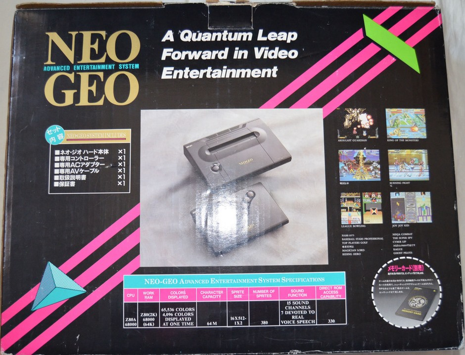

<
También llamada "Sistema de entretenimiento avanzado", era la consola
más deseada de los 90. Tenía un precio prohibitivo, así como todos sus juegos.
Era la misma máquina que las recreativas de SNK, por lo que tenía exactamente
los mismos juegos, de ahí el deseo de todos por jugarla.
Juegos populares como Fatal Fury, Samurai Shodown y principalmente Metal Slug y
King Of Fighters se publicaron y formaron parte de este sistema
>
